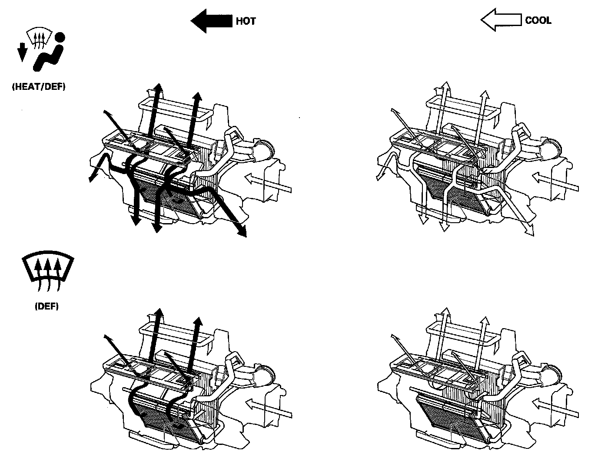
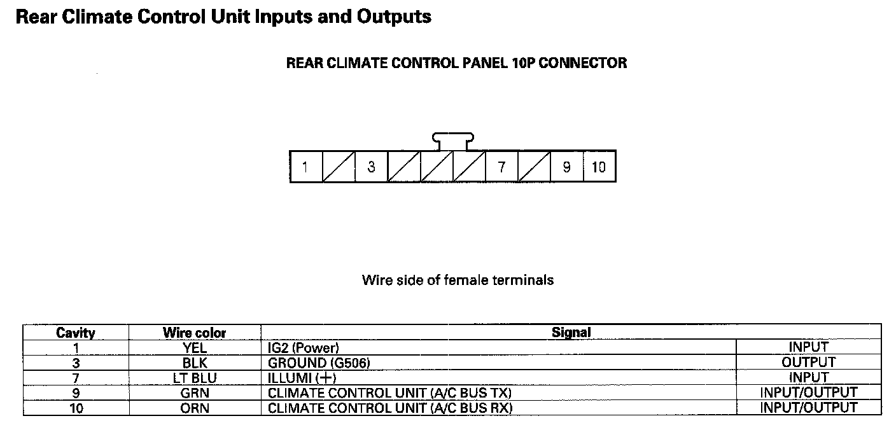

Climate Control
Climate ControlSystem Description
The air conditioning system removes heat from the passenger compartment by transferring heat from the ambient air to the evaporator. The evaporator cools the air with the refrigerant that is circulating through the evaporator. The refrigerant expands in the evaporator, and the evaporator becomes very cold and absorbs the heat from the ambient air. The blower fan pushes air across the evaporator where the heat is absorbed, and then it blows the cool air into the passenger compartment.
This vehicle uses HFC-134a (R-134a) refrigerant, which does not contain chlorofluorocarbons. Pay attention to the following service items:
- Do not mix refrigerants CFC-12 (R-12) and HFC-134a (R-134a). They are not compatible.
- Use only the recommended polyalkyleneglycol (PAG) refrigerant oil (DENSO ND-OIL8) designed for the R-134a A/C compressor. Intermixing the recommended (PAG) refrigerant oil with any other refrigerant oil will result in A/C compressor failure.
- All A/C system parts (A/C compressor, discharge line, suction line, evaporator, A/C condenser, receiver/dryer, expansion valve, O-rings for joints) are designed for refrigerant R-134a. Do not exchange with R-12 parts.
- Use a halogen gas leak detector designed for refrigerant R-134a.
- R-12 and R-134a refrigerant servicing equipment are not interchangeable. Use only a recovery/recycling/charging station that is U.L-listed and is certified to meet the requirements of SAE J2210 to service the R-134a air conditioning systems.
- Always recover refrigerant R-134a with an approved recovery/recycling/charging station before disconnecting any A/C fitting.
Humidity/In-car Temperature Sensor
The humidity sensor consists of two sensors. One is the humidity detection part and the other is the in-car temperature detection part. When the climate control unit receives the signals of the in-car condition from the humidity sensor, and judges that the humidity in the vehicle is very low, the climate control unit adjusts the compressor. Engine power loss is kept to a minimum.
Humidity/In-car Temperature Sensor Quality
The capacitance of the humidity sensor changes by the adsorption and the evaporation of moisture. The resistance change of the humidity sensor changes the output voltage.
A/C Pressure Sensor
The A/C pressure sensor converts A/C pressure into electrical signals to the PCM.
NOTE: The pressures can be monitored using the HDS PGM-FI Data List.
The response of the NC pressure sensor is shown in the graph.

Climate Control Door Positions
Dual Air Mix Control System
i-Dual and i-Tri Climate Control System (With navigation system)
The "i-Dual" climate control system automatically controls the temperature and the vent mode of the air direction to the driver's and passenger's side, depending on the angle of the sun, and the direction of the vehicle. It calculates information such as date, time, longitude, and latitude from the navigation system, as well as the radiant strength of the sun from the sunlight sensor, to determine the appropriate mode position and temperature to be directed to each side. The "i-Tri" climate control system is an addition of the automatic controls with the temperature and the vent mode of the air direction to the rear section to the "i-Dual" climate control system.
In the event that the navigation system malfunctions, or when driving in areas where the navigation system cannot determine the vehicle position (non-coverage areas, tunnels, etc.), the climate control system will operate the same as a vehicle without a navigation system.
Climate Control Unit Inputs And Outputs Part 1:
Climate Control Unit Inputs And Outputs Part 2:
Climate Control Unit Inputs And Outputs
Rear Climate Control Unit Inputs And Outputs:

Rear Climate Control Unit Inputs And Outputs